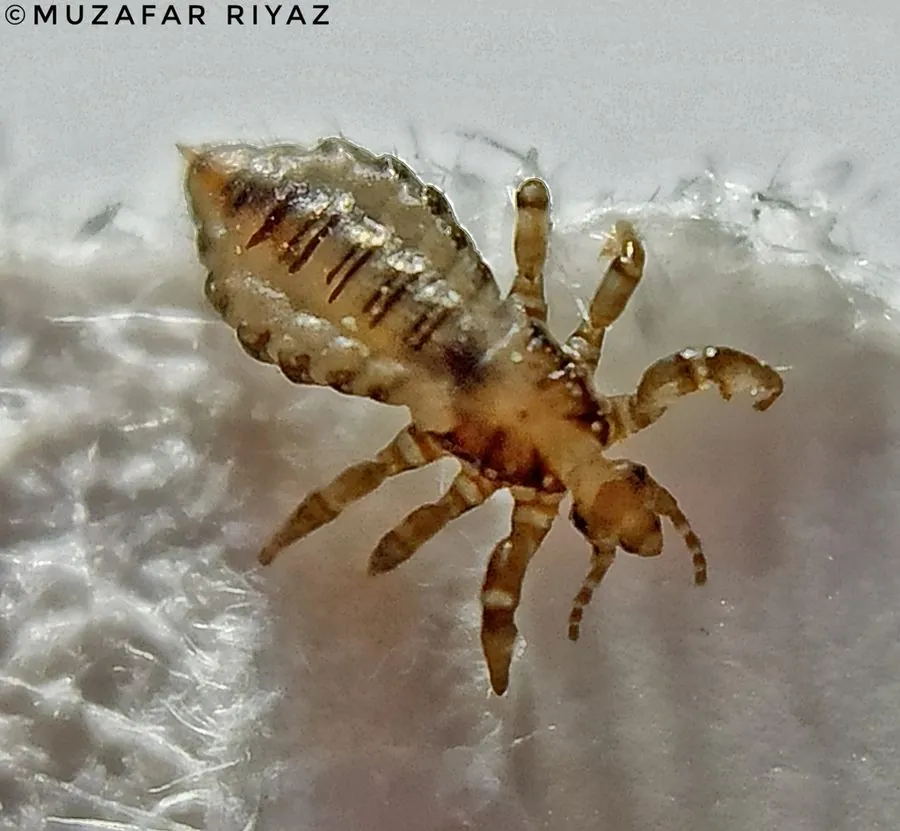

昆虫 · 动物界
头虱 Pediculus humanus

专门寄生于人类头部的虱子，体形小且无翅，爪能紧握发丝，靠刺吸头皮血液为生，卵黏附在头发上。
- 分类
- 门节肢动物门纲昆虫纲目虱目科虱科属虱属
- 栖息环境
- 人类头部毛发中，偶见于衣物和梳子等接触物品
- 地理分布
- 全球分布，各人群均有发生
- 保护级别
- 暂无评估
物种志
头虱成虫体长 2–3 mm，身体扁平，呈灰白色至浅褐色。它的头部小而尖，触角短，口器为刺吸式；足短而粗，末端有爪，可以紧紧抓住头发；没有翅膀，不能飞行也不善跳跃，靠爬行接触传播。
头虱全球分布，只寄生于人的头部毛发中，多见于儿童和集体生活人群。成虫吸血为生，雌虫每天可产数枚卵，卵以黏性物质附着在发根附近，俗称“虮子”，约一周后孵化，若虫经三次蜕皮发育为成虫。头虱叮咬头皮会引起剧烈瘙痒，抓挠后可导致皮肤感染，但它一般不传播严重疾病。头虱离开人体后存活时间很短，通过共用梳子、帽子和枕头等接触传播，防治以勤洗头、高温清洗衣物和专用药物为主。
形态与习性
- 食性刺吸头皮血液
- 体长成虫 2–3 mm
- 外形体扁平无翅，足端有爪可抓住头发
- 繁殖雌虫每天产数枚卵，卵黏附发根，约一周孵化
- 危害叮咬引起剧烈瘙痒，抓挠可致皮肤感染
- 传播通过共用梳子、帽子和枕头等接触传播
趣味知识
- 头虱的卵黏附在发根附近，俗称“虮子”。
- 头虱无翅，不能飞也不能跳，只能靠爬行接触传播。
- 它只寄生在人的头部毛发中，离开人体后存活时间很短。
- 头虱叮咬会引发剧烈瘙痒，但一般不传播严重疾病。